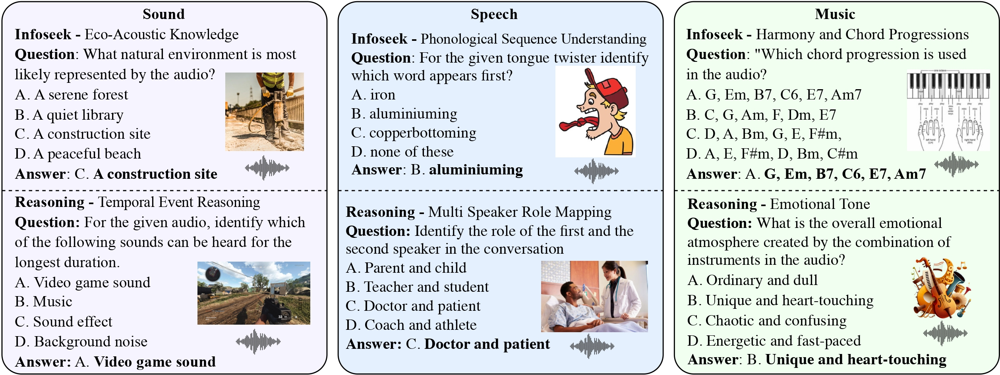

We present MMAU: a novel benchmark designed to evaluate mul- timodal audio understanding models on tasks requiring expert-level knowledge and complex reasoning. MMAU comprises 10k carefully curated audio clips paired with human-annotated natural language questions and answers spanning speech, environmental sounds, and music. It features 27 diverse tasks, includ- ing 12 information-retrieval types 1 and 15 reasoning types 2, challenging mod- els to perform at the level of human experts in complex, multimodal audio un- derstanding. Unlike existing benchmarks, MMAU emphasizes advanced percep- tion and reasoning with domain-specific knowledge, challenging models to tackle tasks akin to those faced by experts. We assess 18 open-source and proprietary (Large) Audio-Language Models, demonstrating the significant challenges posed by MMAU. Notably, even the most advanced Gemini 1.5 achieves only 66.15% accuracy, and the state-of-the-art open-source Qwen2-Audio achieves only 55.4%, highlighting considerable room for improvement. We believe MMAU will drive the audio and multimodal research community to develop more advanced audio understanding models capable of solving complex audio tasks.
MMAU is uniquely designed to test LALMs’ advanced cognitive abilities, challenging models with questions that require complex, deliberate reasoning and knowledge retrieval grounded in audio perception. To our knowledge, MMAU stands as the first comprehensive benchmark to rigorously assess these capabilities, filling a critical gap in the evaluation of LALMs.
To further distinguish the difference between dataset and other existing ones, we elaborate the benchmark details in Figure. From the breadth perspective, prior benchmarks are often restricted to specific domains and question types. The covered image format is also limited.
Comparison of MMAU with existing audio understanding and reasoning benchmarks across various statistics. MMAU covers all three domains—speech, sound, and music—while having the highest number of information-extraction and complex reasoning tasks.
| Audio | Options | Answer | Qwen2-Audio | Gemini |
|---|---|---|---|---|
|
Question: How many speakers are present in this conversation? Audio Id: 4 |
["three", "four", "six", "five"] | three | five | XYZ |
|
Question: From the given utterance, count the number of words that contain at least one stressed phoneme Audio Id: 00026 |
["four","nine","seventeen","one"] | nine | one | XYZ |
|
Question: Which mood is primarily conveyed by the audio? Audio Id: 437791.2min |
[ "Relaxed and calm", "Joyful and lighthearted", "Aggressive and intense", "Serious and urgent" ] | Serious and urgent | Relaxed and calm | XYZ |
We evaluate various models including LALMs and LLMs. In each type, we consider both closed- and open-source models.
| Sound | Music | Speech | Avg | ||||||
|---|---|---|---|---|---|---|---|---|---|
| Name | Size | Test-mini | Test | Test-mini | Test | Test-mini | Test | Test-mini | Test |
Overall results of different models on the MMMAU leaderboard. The best-performing model in each category is in-bold, and the second best is underlined. *: results provided by the authors.
We delve into the analysis of errors by Qwen2-Audio-Instruct and Gemini Pro v1.5, the below figure is the breakdown of the error types made by Qwen2-Audio-Instruct and Gemini Pro v1.5 across 500 instances. The dominant error category for both models is Perceptual Errors, with Qwen2-Audio-Instruct showing 55% and Gemini Pro v1.5 at 64%. This indicates that both models struggle primarily with understanding and accurately perceiving the audio inputs.
Distribution of human-annotated error types across 500 instances for Qwen2-Audio-Instruct (Left) and Gemini Pro v1.5 (Right).
BibTex Code Here